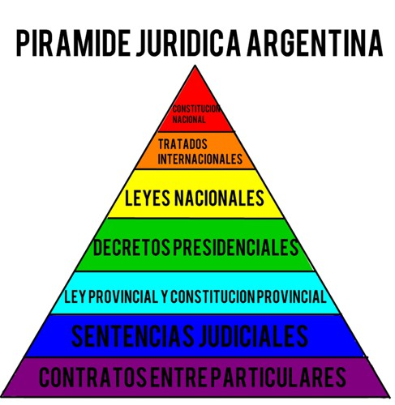

|
|
lartunet — home — computing : games & art : research — sitemap |
Hay muchas nociones de derecho. Se definen dos tipos de enunciados jurídicos: los enunciados internos y los externos. Los internos expresan la aceptación de las reglas de un sistema y los formula gente como los jueces, que usan esas reglas para justificar sus decisiones. Los externos solo describen la existencia de reglas en una sociedad, sin necesariamente aceptarlas.
Hay un debate jurídico-filosófico sobre el concepto de derecho, que dicho así nomás puede aludir a los estándares que el gobierno tiene el deber de reconocer y hacer efectivos a través de instituciones como los jueces y la policía.
El ordenamiento jurídico es un conjunto de normas jurídicas vigentes en una comunidad política. Es la realidad social desde el punto de vista del derecho, sus derechos y deberes. Hay tres ordenes juridicos distintos: universal, internacional y nacional. Las relaciones entre los países y sus oblicaciones recíprocas constituyen el orden jurídico internacional. Este regula el comportamiento de los estados y otros sujetos internacionales. El orden jurídico nacional constituye el derecho interno de un estado.
Existe también discusión al respecto de si el derecho debe ser puramente descriptivo (positivismo, derecho positivo) o si debe incluir propiedades normativo-valorativas (iusnaturalismo, derecho natural).
Carlos Nino argumenta que el positivismo construye una ciencia realista y empírica, útil al sociólogo y al antropólogo, pero incapaz de proveer base para las argumentaciones que constituyen la profesión del abogado. Por otro lado, el iusnaturalismo, dice que preserva solo la parte legislativa como vínculo al mundo empírico, alejado de la realidad, y puede resultar en controversias para determinar cuando un ácto es creador de derecho (¿jurisprudencia?) y cuándo no.
Se define al estado como una población que reside en un determinado territorio y está sujeta a un poder soberano. El estado es una comunidad organizada.
Desde el punto de vista metodológico jurídico-normativo, el estado se analiza desde los textos constitucionales y normativos. Por lo tanto se lo puede considerar un objeto de estudio del derecho constitucional. Esta visión no incluye ciertos factores del mundo real (económico-políticos), que condicionan la vigencia de los textos normativos. Desde un punto de vista metodológico empírico-normativo, el estado se analiza desde la realidad de los hechos y como un fenómeno social. Por lo tanto, puede considerárselo como un objeto de estudio de la ciencia política. Esta visión es descriptiva y, por lo tanto, minimiza la importancia que tienen los factores normativos del derecho constitucional. Ergo, hay que estudiar el estado desde ambas posturas.
El derecho se divide en derecho público interno (derecho constitucional, derecho administrativo, derecho financiero, derecho tributario, derecho penal, derecho procesal, derecho de los recursos naturales), derecho público externo (derecho internacional público, derecho comunitario), derecho privado interno (derecho civil, derecho comercial, derecho laboral), derecho privado externo (derecho internacional privado), derecho público y privado (derecho económico, derecho marítimo, derecho aeronáutico, derecho espacial, derecho concursal, derecho societario, derecho de la seguridad social). Notar cómo son interno privado y público, externo privado y público, y "privado y público".
Acá nos vamos a enfocar en el derecho interno, público y privado.
Derecho Público Interno
Del derecho público interno vamos a enfatizar en el derecho constitucional, el derecho administrativo, el penal, el procesal y el de los recursos naturales.
Derecho Constitucional
El derecho (público interno) constitucional es el conjunto de normas jurídicas que regulan la organización de un estado. Regulan las funciones y los órganos del estado, la organización y las atribuciones de los poderes públicos, y el resguardo de los derechos de las personas.
El derecho constitucional moderno se basa en dos notas escenciales: libertad y democracia. La constitución establece un régimen de garantías para los gobernados frente al poder público. Estas dos notas escenciales derivan en una tercera: la separación de poderes.
Las constituciones pueden ser escritas y no escritas. Las escritas están consignadas en un texto, las otras derivan de normas con-sue-tudinarias (costumbres), o textos constitucionales dispersos.
Las constituciones escritas pueden ser escritas rígidas o escritas flexibles. Las rígidas requieren un proceso especial para reformarlas, distinto de la creación de leyes. Las otras no. Las constituciones no escritas son flexibles.
Las constituciones tienen dos partes: una parte orgánica y una parte dogmática. La primera regula el establecimiento y funciones de los órganos del estado. La segunda parte contiene los derechos, libertades y deberes (¿de los ciudadanos del estado?).
Derecho Administrativo
El derecho administrativo regula la organización y el funcionamiento de los servicios públicos. Reglamente los derechos y obligaciones de sus funcionarios. Un servicio público es una organización de carácter permanente, destinada a satisfacer una necesidad pública de manera regular y continua.
El derecho administrativo debe atender las necesidades colectivas de la sociedad y lo concerniente a su conservación y progreso. Regula la forma en la que el estado debe actuar para garantizar la realización del bien público. Constituye una garantía de los derechos particulares y asegura una pronta y eficaz satisfacción del interés general.
El derecho administrativo se basa en dos principios: el principio de igualdad, igualdad básica pero relativa, proporcional a la condición que cada sujeto se halle frente al bien común susceptible de reparto; y el principio de legalidad, que exige que la actuación de la administración se realice conforme al ordenamiento jurídico positivo. O sea, el estado está sujeto a la ley.
Derecho Penal
El derecho penal estudia el fenómeno criminal: el delito y la pena. Es el conjunto de reglas establecidas por un estado que fijan la pena correspondiente a cada delito. Es el conjunto de reglas que regula el poder punitivo del estado. Asocia al delito como presupuesto y a la pena como consecuencia jurídica (o sea: no hay pena si no hay delito.)
El derecho penal se rige por tres principios básicos: no hay crimen ni pena sin la existencia de una ley; toda ley y tribunal llamado a aplicarla deben ser preexistentes al hecho; y nadie puede ser condenado sin haber sido previamente oído.
Derecho Procesal
El derecho procesal es el conjunto de normas que rigen cómo se organizan los tribunales de justicia. Fija la competencia y las atribuciones de estos tribunales y establece el procedimiento a seguir en actuaciones judiciales.
Un juicio o proceso es una contienda que se somete a la decisión de un tercero. En todo juicio hay dos partes: un actor y un demandante (o accionado, el actor invoca una acción sobre el accionado). Además, hay una materia, que es la cuestión sobre la que hay disputa y un tribunal u órgano con autoridad para resolver la causa sometida a su decisión bajo el acto procesal que se denomina sentencia.
El individuo tiene el poder jurídico de acción, que es la facultad de reclamar ante un tribunal un derecho que tienen (o pretenden tener).
Derecho de los Recursos Naturales
El derecho de los recursos naturales estudia las cuestiones tendientes a la utilización y preservación del suelo, agua, sustancias minerales, flora, fauna, atmósfera, energía y demás bienes útiles al hombre.
Derecho Privado Interno
Del derecho privado interno vamos a enfatizar en el derecho constitucional, el derecho administrativo, el penal, el procesal y el de los recursos naturales.
Del derecho privado interno vamos a enfatizar en el derecho civil, el derecho comercial (o derecho mercantil) y el laboral.
Derecho Civil
El derecho civil es el conjunto de normas jurídicas que rigen la conducta de las personas como tal. Tiene por objeto la regulación de la persona en su estructura orgánica, lo derechos que le corresponden como tal y sus relaciones derivadas de su integración en la familia. Rige el nacimiento, la existencia, la muerte, el matrimonio, las relaciones de familia, el régimen de bienes, las obligaciones en general, los contratos comunes, las donaciones y las sucesiones por muerte.
Una definición clásica de derecho civil señala que «Establece las reglas generales que rigen las relaciones jurídicas de los particulares, ya sea entre sí, ya con el Estado, en tanto que estas relaciones tengan por objeto satisfacer necesidades de carácter humano. Considera al hombre en su calidad de tal, reglamenta la familia, las obligaciones y contratos, la propiedad y demás derechos reales y el derecho de sucesión. El derecho civil suele ser llamado también derecho común porque es el derecho común a todos los seres humanos sin distinción de nacionalidad, sexo, profesión u otras circunstancias análogas; se opone, en este sentido a otras ramas del derecho privado».
En Argentina el derecho civil se rige por el Código Civil [y Comercial de la Nación] y otras leyes complementarias (como las leyes de adopción, de localizaciones urbanas, de propiedad horizontal, de trasplante de órganos, de matrimonio civil (igualitario), etc). La función de estas leyes es regular instituciones no contempladas en el Código Civil o que requieran una regulación acorde a las expectativas y necesidades sociales.
El Código Civil y Comercial de la Nación regula también los contratos típicos y atípicos, los contratos bancarios y los contratos de consumo.
Derecho Laboral
El derecho laboral regula y protege las condiciones de empleo de los trabajadores en relación de dependencia, y las relaciones jurídicas entre empresarios y trabajadores.
El derecho laboral se basa en tres principios protectores básicos: in dubio, pro operario, la regla de la norma más favorable (que establece que en caso de duda sobre la aplicación de las normas que rijan una institución del trabajo, el juez debe optar por la aplicación de la más favorable para el trabajador) y la regla de la condición más beneficiosa, que dice que una norma posterior debe respetar siempre la condición más beneficiosa que se haya incorporado al patrimonio del trabajador, a menos que sea irrazonable o un privilegio irritante que afecte al bien común.
Según Wikipedia, la libertad de expresión es el principio que apoya la libertad de un individuo o un colectivo de articular sus opiniones e ideas sin temor a represalias, censura o sanción posterior.
La constitución argentina dice en el artículo 14 que «Todos los habitantes de la Nación gozan de los siguientes derechos conforme a las leyes que reglamenten su ejercicio, a saber: [...] de publicar sus ideas por la prensa sin censura previa [...]». Además en el artículo 32 dice que «El Congreso Federal no dictará leyes que restrinjan la libertad de imprenta o establezcan sobre ella la jurisdicción federal».
La constitución no aclara bien qué clase de actos expresivos abarca la libertad de expresión. Los tratados incorporados a la Constitución Nacional (tratados de carácter constitucional), artículo 75, inciso 22, detallan mejor la libertad de expresión que los artículos citados en el párrafo anterior.
La Convención Americana dice «Toda persona tiene derecho a la libertad de pensamiento y de expresión. Este derecho comprende la libertad de buscar, recibir y difundir informaciones e ideas de toda índole, sin consideración de fronteras, ya sea oralmente, por escrito o en forma impresa o artística o por cualquier otro procedimiento de su elección», en su artículo 13, inciso 1º.
La Convención Americana no protege todas las expresiones por igual. Toda propaganda en favor de la guerra, y la apología al odio nacional, racial o religioso, que constituyan incitaciones a la violencia o cualquier otra acción ilegal similar contra cualquier persona o grupo, sea cual sea el motivo, deben ser prohibidas por la ley (artículo 13, inciso 5 de la Convención Americana). El Pacto internacional de los derechos civiles y políticos también prohibe lo mismo en su artículo 20.
El Convención Internacional sobre la Eliminación de todas las formas de Discriminación Racial condena la propaganda y organización basada en la superioridad de una raza, grupo de personas o etnia que pretenda justificar o promover el odio racial y la discriminación. Incluso su financiación y asistencia (artículo 4).
Diferentes países toman diferentes posturas frente a la libertad de expresión. Se clasifican dos modelos, Modelo Libertario (EEUU), y Modelo Represivo (Europa). En el modelo libertario se tolera el discurso dirigido contra personas indeterminadas, mientras que el modelo represivo no lo permite y sostiene un conjunto d enormas legales que combaten tal forma de discurso.
En Argentina, no hay límite alguno al poder represivo del estado en lo que respecta a la difusión de ideas en el discurso público. Las únicas expresiones de odio que no son sancionables en la Argentina son: adherir internamente a una ideología de odio, las expresiones de odio que no puedan terminar en actos de violencia inmediatios, la negación de hechos históricos, y la difusión de expresiones de odio de terceros con fines informativos.
En Europa, la Corte Europea de Derechos Humanos sostiene que los estados solo pueden reprimir las expresiones de odio si pueden probar que el daño provocado por tal discriminación no puede ser disminuído por otros medios que no sean la supresión de la expresión, aún si existe una conexión entre estos comentarios y una subsecuente discriminación racial.
En Estados Unidos, el modelo libertario se sustenta en que «El principio cardinal de la jurisprudencia estadounidense es que el Estado no puede restringir una expresión en función de su contenido. Por ello es que el gobierno no puede castigar la difusión de una idea determinada con el único argumento que dicha idea es nociva, peligrosa u ofensiva». El modelo yankee plantea responder a dichas expresiones con más expresión (Counter-Speech). El gobierno puede sí restringir las expresiones de odio exteriorizadas a través de amenazas o actos de intimidación dirigidos a una persona o grupo determinados, o dirigidos a una persona directamente, cara a cara, que puedan provocar una reacción violenta de la persona que las recibe (Fighting Words), siempre y cuando la ley sea neutral al contenido de la expresión. Sin embargo, la tradición del derecho judicial norteamericano protege el discurso que exalta la ira, invita a pelear, provoca una situación de inquietud o crea desorden.
Señalo, como uno de los casos paradigmáticos en la materia, “Village of Skokie v. National Socialist Party of América” (1978), originado por la petición del Partido Nacional Socialista de América (NSPA), de ideología nazi, de marchar libremente en la localidad de Skokie (Estado de Illinois) habitada mayormente por personas de religión judía; muchos de ellos, sobrevivientes del holocausto. Las autoridades locales prohibieron la distribución de propaganda que incitara o promoviera el odio, la utilización de uniformes del NSPA y el lucimiento de esvásticas; exigiendo a la NSPA, la contratación de un seguro de responsabilidad. En el caso en particular, las exigencias de las autoridades locales tuvieron por objeto prevenir un daño mayor relacionado con la difusión de las ideas o mensajes de la NSPA. Este tipo de regulación (neutral), está dirigida al tiempo, lugar y forma en la que deben expresarse las personas en actos públicos. El tema, motivo de controversia, nos introduce sobre los alcances de la libertad de expresión, bajo la protección de la Primera y Decimocuarta enmiendas a la Constitución de los Estados Unidos de Norteamérica. La Corte de Illinois, con cita en la Corte federal, sostuvo la inconstitucionalidad de la restricción, argumentando que no debía impedirse la marcha, a pesar de “la impopularidad de las ideas, su carácter perturbador, repugnante y aún alarmante”. Para la Corte estadual, los argumentos para que no se llevara a cabo la marcha, no fueron suficientes. Por el contrario, el criterio imperante en los EE.UU. por el cual es posible castigar las expresiones de odio se refiere a aquellas “dirigidas a incitar o producir una inminente acción violenta y sean suficientes para probablemente incitar o producir tal acción (“Brandenburg v. Ohio”) o puedan generar una reacción violenta por parte de los oyentes, y esta violencia inminente no pueda ser prevenida de forma satisfactoria mediante el empleo de técnicas de control de multitudes (“Edward v. South Carolina” y “Cox v. Lousiana”)”.
Por el contrario, la Corte Europea de Derechos Humanos, en Wingrove v. UK, la British Board of Film Classification negó por blasfema el certificado de clasificación (requerido pra vender, alquilar o difundir) al video musical Visiones de Éxtasis, sobre la vida y obra de Santa Teresa de Ávila y sus visiones sobre Jesucristo. La corte sostuvo que «represión penal de la blasfemia tiene por finalidad la supresión de las conductas susceptibles de causar indignación entre los cristianos; procurando proteger el derecho de los ciudadanos a no ser insultados en sus sentimientos religiosos». Idem, en I.A. v. Turquía, la corte europea mantuvo su postura frente al ban de una obra al señalar que «no fue una violación a la libertad de expresión la condena penal por blasfemia impuesta por un tribunal turco a un editor que había publicado una novela que contenía expresiones fuertemente críticas respecto de la religión, y en particular del Islam».
En Argentina, el ente encargado de visibilizar, concientizar y sensibilizar sobre los procesos racistas y xenófobos es el INADI (Instituto Nacional contra la Discriminación, la Xenofobia y el Racismo).
En Argentina hay diversas normas regulatorias contra la discriminación. La Ley Antidiscriminatoria (23.592) establece medidas para quienes arbitrariamente impidan el pleno ejercicio de los derechos y garantías fundamentales reconocidos en la constitución, y penaliza los actos u omisiones discriminatorios por motivos de raza, religión, nacionalidad, ideología, opinión política, gremial, sexo, posición económica, condición social o características físicas. Además, eleva la escala penal de todo delito si este fuera cometido por persecución u odio a una raza, religión o nacionalidad, inclusive participar en una organización basada en ideas o teorías de superioridad racial, religiosa, etc. Y quienes inciten a que tal discriminación / persecución / odio tenga lugar.
También están regulados los servicios audiovisuales (artículo 70):
«[...] que promuevan o inciten tratos discriminatorios basados en la raza, el color, el sexo, la orientación sexual, el idioma, la religión, las opiniones políticas o de cualquier otra índole, el origen nacional o social, la posición económica, el nacimiento, el aspecto físico, la presencia de discapacidades o que menoscaben la dignidad humana o induzcan a comportamientos perjudiciales para el ambiente o para la salud de las personas y la integridad de los niños, niñas o adolescentes»
Y los avisos publicitarios (ley 26.522):
«[…] no importarán discriminaciones de raza, etnia, género, orientación sexual, ideológicos, socio-económicos o nacionalidad, entre otros; no menoscabarán la dignidad humana, no ofenderán convicciones morales o religiosas, no inducirán a comportamientos perjudiciales para el ambiente o la salud física y moral de los niños, niñas y adolescentes»
La constitución argentina sostiene la preeminencia del derecho federal sobre cualquier otra expresión jurídica de las provincias. Las provincias retienen cualquier otro poder que la constitución no le de al gobierno nacional y cualquier otro poder que se hayan reservado al asociarse a la confederación. Artículos 31, 121 y 126.
El inciso 22, artículo 75 dicta que los tratados tienen jerarquía superior a las leyes y los aprueba el congreso.
Los tratados que tienen jerarquía constitucional solo pueden ser denunciados por el Poder Ejecutivo y con la aprobación de 2/3 del congreso. Se entienden como extensión de la constitución, aunque entiendo (not sure!) que en un grado menor, porque no pueden derogar artículos de la constitución. Se requiere 2/3 del congreso para hacer que otro tratado pase a tener jerarquía constitucional.
Tratados que tienen jerarquía constitucional:
La pirámide jurídica argentina es, de arriba hacia abajo:
— O35H36 (JPEG) - view original (254 KiB, JPG)
La Convención de Viena es un tratado internacional, constitucionalmente válido, que dice (artículo 27) «Una parte no podrá invocar las disposiciones de su derecho interno como justificación del incumplimiento de un tratado»
La Corte Interamericana es el órgano judicial autónomo de la OEA, surgiendo su mandato de la propia Convención. Tiene como objetivo interpretar y aplicar la Convención y otros tratados interamericanos de derechos humanos a través de opiniones consultivas y sentencias, sobre los casos que sólo los Estados Partes y la CIDH pueden someter ante la misma; ergo, las personas no pueden acudir directamente a la Corte, sino que deben presentar su petición ante la CIDH.
La Comisión Interamericana de Derechos Humanos (CIDH), creada en 1959, es un órgano principal, autónomo y consultivo de la OEA, encargado de la promoción, protección, observancia y defensa de los derechos humanos en el continente americano. La CIDH puede remitir los casos ante la Corte Interamericana.
las sentencias de la Corte Interamericana son las únicas decisiones de los órganos de protección del Sistema Interamericano obligatorias para los Estados, siempre y cuando estas sentencias no impongan una medida que implique desconocer derechos fundamentales del orden jurídico interno.
La decisión de la Corte Interamericana en un caso contencioso es obligatoria con relación a un Estado parte de la Convención que aceptó su competencia, al ser parte en un proceso internacional concreto en el cual esa decisión fue dictada, y exclusivamente con relación al proceso en cuestión.
La Relatoría Especial para la Libertad de Expresión de la CIDH, fue establecida como una oficina permanente e independiente, que actúa dentro del marco y con el apoyo de la CIDH, para estimular la defensa del derecho a la libertad de pensamiento y de expresión en el continente.
Para la Corte Interamericana, en la Convención Americana, una persona es un ser humano. Una persona jurídica no es una persona. Esto es así porque la Corte Interamericana constató que los derechos humanos contenidos en el Pacto Internacional de Derechos Civiles y Políticos no son extensivos a las personas jurídicas. Excepto a las comunidades indígenas. Also también en ciertas condiciones (como en el caso de RCTV vs Venezuela), cuando los derechos de la persona estén cubiertos por una figura o ficción jurídica creada por el mismo sistema jurídico.
En la Convención Internacional sobre la Eliminación de todas las formas de Discriminación Racial sí pueden admitirse grupos u organizaciones.
En resumen, el Alto Tribunal constató que en la mayoría de los sistemas analizados no se les reconocen derechos a las personas jurídicas, salvo en el Sistema Europeo y en el marco del CERD.
La Corte señaló que los medios de comunicación son mecanismos que sirven al ejercicio del derecho a la libertad de expresión de quienes los utilizan como medio de difusión de sus ideas o informaciones. El Tribunal sostuvo, que “la línea editorial de un canal de televisión puede ser reflejo de las opiniones políticas de sus directivos y trabajadores en la medida en que estos se involucren y determinen el contenido de la información transmitida”.
La Declaración de Principios Sobre Libertad de Expresión de la CIDH sostiene, que “La libertad de expresión, en todas sus formas y manifestaciones, es un derecho fundamental e inalienable, inherente a todas las personas. Es, además, un requisito indispensable para la existencia misma de una sociedad democrática" (principio 1).
La Corte Interamericana (Opinión Consultiva 5/85) oponiéndose a la CIDH, declaró la colegiación obligatoria de periodistas como contraria a la Convención; considerando a las leyes que estipulan la afiliación obligatoria a una asociación profesional para ejercer el periodismo, violatorias del artículo 13, de la citada norma. “La libertad de expresión en su dimensión individual, no se agota en el reconocimiento teórico del derecho a hablar o escribir, sino que comprende además, inseparablemente, el derecho a utilizar cualquier medio apropiado para difundir el pensamiento y hacerlo llegar al mayor número de destinatarios".
La Corte Interamericana afirmó la indivisibilidad de la expresión y la difusión del pensamiento y de la información; entendiendo, que una restricción a la posibilidad de divulgación representa directamente, un límite al derecho a expresarse libremente.
Ivcher Bronstein: 2001, lo dejaron sin nacionalidad peruana, lo echaron del Canal 2 y echaron a los que trabajaban en el programa Contrapunto por un informe en contra de los servicios de inteligencia del gobierno peruano. La Corte Interamericana consideró que la resolución que dejó sin efecto legal el título de nacionalidad constituyó un medio indirecto para restringir su libertad de expresión, así como la de los periodistas que trabajaban e investigaban para el programa Contrapunto. La Corte declaró que al separar a Ivcher del control del Canal 2, y excluir a los periodistas del programa Contrapunto, el Estado no sólo restringió el derecho de éstos a circular noticias, ideas y opiniones, sino que afectó también el derecho de todos los peruanos a recibir información limitando así su libertad para ejercer opciones políticas y desarrollarse plenamente en una sociedad democrática.
Kimel vs Argentina (2008): fue llevado a la Corte Interamericana a raíz de la querella criminal por calumnias iniciada por el juez Guillermo Rivarola, en contra de Eduardo Kimel, autor del libro La masacre de San Patricio, obra publicada en 1989, en la que analiza el asesinato de cinco religiosos de la orden de los palotinos, acaecida en la iglesia de San Patricio -barrio de Belgrano- el 4 de julio de 1976, en plena dictadura militar; criticando en el texto, la actuación de las autoridades de la investigación de los homicidios, entre ellas, la del juez citado. Kimel fue condenado en primera instancia, y luego la Cámara de Apelaciones anuló el fallo y absolvió a Kimel. El juez Rivarola apeló a la CSJN y produjo que se revocara el fallo. La paradoja fue que Kimel era condenado, quedando, los asesinos, impunes. Producido el reclamo el 23 de enero de 2001 ante la CIDH, y transcurridos siente años, las actuaciones fueron giradas a la Corte Interamericana, la que determinó, que el Estado argentino incumplió sus obligaciones internacionales, al incurrir en la violación de los artículos 8 (Garantías Judiciales) y 13 (Libertad de Expresión) de la Convención, en relación con la obligación general de respeto y garantía de los derechos humanos y el deber de adoptar disposiciones de derecho interno establecidos en los artículos 1.1 y 2 de la normativa citada. CELS y CEJIL alegaron que el Estado argentino violó el derecho del que gozan las personas a expresar sus ideas a través de la prensa y al debate de asuntos públicos, al utilizar ciertos tipos penales como medio para criminalizar esas conductas. La CIDH sostuvo, que “se utilizaron los delitos contra el honor con el claro propósito de limitar la crítica a un funcionario público”, y que “la descripción de las conductas de calumnias e injurias tiene tal ambigüedad, amplitud y apertura que permite que las conductas anteriormente consideradas como desacato sean sancionadas indebidamente a través de estos tipos penales”.
Sobre las opiniones vertidas por Kimel, se ha señalado que las mismas no deben considerarse ni verdaderas ni falsas. Como tal, la opinión no puede ser objeto de sanción.
Gracias a Kimel vs Argentina se despenalizó el delito contra el honor al reformar el código penal por la ley 26551.
Fontevecchia y D'Amico vs. Argentina: TODO
Los principales estándares sobre la libertad de expresión y la regulación de la radiodifusión formulados por la Corte Interamericana -Declaración de Principios-, la CIDH y su Relatoría Especial, destacan el importante papel del Estado en la regulación del espectro radioeléctrico, con el objeto de asegurar una radiodifusión libre, independiente, vigorosa, plural y diversa. Los estándares afirman que la regulación del espectro debe ser clara, transparente y democrática, garantizando la libertad de expresión del mayor número de personas o perspectivas, la igualdad de oportunidades en el acceso a los medios, y el derecho a la información plural y diversa de la sociedad.
Por el contrario, conspiran contra la libertad de expresión, los medios indirectos de censura, la pauta publicitaria como elemento de presión sobre los medios, el no llamado a concursos, o la asignación inequitativa de licencias de radio y televisión, y la traba a la importación de enseres o aparatos para la actividad informativa y comunicacional. (Artículo 13. 3º de la Convención Americana).
En consecuencia, la igualdad en el ejercicio de la libertad de expresión, a efectos de analizar la legitimidad de la finalidad perseguida por la regulación sobre radiodifusión requiere de tres componentes: pluralidad de voces -medidas antimonopólicas-, diversidad de las voces -medidas de inclusión social- y no discriminación -acceso en condiciones de igualdad a los procesos de asignación de frecuencias-.
Muchas empresas controlan el tráfico de información y datos. Amazon, FB, etc.
En el orden internacional se ha señalado, que “Una característica transformativa del entorno de las comunicaciones digitales es el poder de las empresas privadas y, particularmente, de las redes sociales, las plataformas de búsqueda y otros intermediarios, sobre las comunicaciones, con un enorme poder concentrado en unas pocas empresas”
El Decreto 1279/1997 dispuso, que “[…] el servicio de Internet se considera comprendido dentro de la garantía constitucional que ampara la libertad de expresión, correspondiéndole en tal sentido las mismas consideraciones que a los demás medios de comunicación social” (artículo 1°).
Al año siguiente, la Ley 26.032, de Servicio de Internet (2005), vino a robustecer la garantía constitucional que ampara la libertad de expresión, al disponer, que “La búsqueda, recepción y difusión de información e ideas de toda índole, a través del servicio de Internet, se considera comprendido dentro de la garantía constitucional que ampara la libertad de expresión” (artículo 1°).
En nuestro país, la Ley Argentina Digital, 27.078 (2014), promueve el rol del Estado como planificador en la accesibilidad y asequibilidad de las tecnologías de la información y las comunicaciones (TIC), garantizando el derecho humano a las comunicaciones y a las telecomunicaciones.
La Ley Argentina Digital declara el interés público en el desarrollo de las TIC, las telecomunicaciones, y sus recursos asociados, estableciendo y garantizando la completa neutralidad de las redes. El objeto de la normativa, es el de posibilitar el acceso de la totalidad de los habitantes a los servicios TIC en condiciones sociales y geográficas equitativas, con los más altos parámetros de calidad. La norma es de orden público y excluye cualquier tipo de regulación de los contenidos, cualquiera fuere su medio de transmisión (artículo 1°).
Los derechos personalísimos encuentran su fundamento en el principio constitucional del respeto a la personalidad humana, comprendiendo los derechos subjetivos que lo integran; caracterizados por ser esenciales, innatos, necesarios, vitalicios, e inalienables. Garantiza la disposición de sus propios actos, como el derecho a ser dejado solo (the right to be let alone), a disponer del propio cuerpo, y de todo aquello que se relacione con su vida.
Se fundamentan en el respeto a la libertad, dignidad, e inviolabilidad de la persona humana, preexistente a todo ordenamiento positivo, y pilar del sistema democrático; siendo un valor fundamental, jurídicamente protegido.
El artículo 19 de la CN garantiza la libertad civil: «Ningún habitante de la Nación será obligado a hacer lo que no manda la ley, ni privado de lo que ella no prohíbe».
Los derechos de inviolabilidad y dignidad personal también están en el CCyN: La persona humana es inviolable y en cualquier circunstancia tiene derecho al reconocimiento y respeto de su dignidad (artículo 51) y La persona humana lesionada en su intimidad personal o familiar, honra o reputación, imagen o identidad, o que de cualquier modo resulte menoscabada en su dignidad personal, puede reclamar la prevención y reparación de los daños sufridos (Artículo 52).
Hay amplia jurisprudencia que reconoce la protección de los derechos personalisimos -especialmente el derecho a la intimidad, al honor y a la imagen- frente a agravios producidos por difusión de información en la prensa gráfica, servicios audiovisuales y nuevos espacios de comunicación (como FB y TW).
Si bien la legislación Argentina garantiza la publicación de ideas sin censura previa, no es un derecho absoluto, por lo que se establece en simultaneo la responsabilidad ulterior por la información emitida. Uno tiene la responsabilidad de respetar los derechos a la reputación de los demás, y la protección de la seguridad nacional, el orden público y la moral pública. Ergo: la libertad y la responsabilidad resultan conceptos indivisibles.
Toda persona tiene el derecho a ser respetado como persona, a no ser perjudicado en su existencia (derechos a la vida, el cuerpo y la salud) y no ser perjudicado en su dignidad (honor, intimidad e imagen). Cada individuo está obligado frente a las demás personas de igual modo.
Además, todo inviduo tiene (articulo 1710 CCyC) la obligación de evitar causar un daño no justificado, adoptar las medidas para evitar que se produzca un daño, no agravar el daño o a ser reembolsadas si evitaron que se le cause un daño a un tercero por sus propios medios. Hay daño cuando se lesiona un derecho.
La intimidad es la zona espiritual íntima y reservada a una persona (o a un grupo). Especialmente la de una familia.
La privacidad es el ámbito de la vida privada que se tiene derecho a proteger de cualquier intromisión. Es un superset de la intimidad.
La CN asegura la inviolabilidad de la intimidad y la privacidad de una persona en el artículo 18, al hablar de la inviolabilidad de su domicilio, correspondencia y papeles privados.
Los siguientes tratados protegen también la intimidad: Declaración Americana de los Derechos y Deberes del Hombre (artículo 5), la Declaración Universal de Derechos Humanos (artículo 12), el Pacto Internacional de Derechos Civiles y Políticos y su Protocolo Facultativo (artículo 17), la Convención sobre los Derechos del Niño (artículo 16), y la Convención Americana (Artículo 11).
El leading case de los derechos personalísimos es Ponzetti de Balbín, Indalia v. Editorial Atlántida S.A., en el que se cuestionó a la revista Gente por publicar una foto de Ricardo Balbín agonizante en un sanatorio de forma subrepticia (sin permiso). La Corte suprema expresó al respecto:
«El derecho a la privacidad comprende no solo la esfera doméstica, el círculo familiar y de amistad, sino otros aspectos de la personalidad espiritual o física de las personas, tales como la integridad corporal o la propia imagen, y nadie puede inmiscuirse en la vida privada de una persona ni violar áreas de su actividad no destinadas a ser difundidas sin su consentimiento o el de sus familiares autorizados a ello, y solo por ley puede justificarse la intromisión siempre que medie un interés superior en resguardo de la libertad de los otros, la defensa de la sociedad, las buenas costumbres o la persecución de un crimen»
«El Código Civil y Comercial de la Nación, al igual que el anterior Código Civil de la Nación (artículo 1071bis), respecto del derecho a la intimidad, prescribe: “Protección de la vida privada. El que arbitrariamente se entromete en la vida ajena y publica retratos, difunde correspondencia, mortifica a otros en sus costumbres o sentimientos, o perturba de cualquier modo su intimidad, debe ser obligado a cesar en tales actividades, si antes no cesaron, y a pagar una indemnización que debe fijar el juez, de acuerdo con las circunstancias. Además, a pedido del agraviado, puede ordenarse la publicación de la sentencia en un diario o periódico del lugar, si esta medida es procedente para una adecuada reparación” (artículo 1770).»
El derecho a la intimidad debe diferenciarse de las acciones privadas que no dañen a terceros porque no está sujeto a la moral pública. Por el artículo 19 de la constitución:
“Las acciones privadas de los hombres que de ningún modo ofendan al orden y a la moral pública, ni perjudiquen a un tercero, están sólo reservadas a Dios y exentas de la autoridad de los magistrados. Ningún habitante de la Nación será obligado a hacer lo que no manda la ley, ni privado de lo que ella no prohíbe” (artículo 19).
El artículo 19 de la Constitución Nacional constituye una frontera que protege la libertad personal frente a cualquier intervención ajena, incluida la estatal.
Otro caso paradigmático es el de los testigos de jehová por la transfusión de sangre. Están resguardados por la libertad de autodeterminación, también según el artículo 19.
Los derechos de la personalidad concluyen con la muerte. Sin embargo, los derechos de los familiares o allegados que invoquen un interés legítimo, al haberse afectado la memoria de aquella y el debido respeto al grupo familiar, podría generar reclamos en referencia al contenido de un libro, película o labor periodística, en la tutela de un interés propio, bajo el manto del sufrimiento personal al haberse ultrajado la intimidad, el honor o la imagen de la persona fallecida, repercutiendo en las personas vivas.
En el caso Juan Carlos Hipólito Irigoyen v. The International Raoul Wallenberg Foundation se dio porque el primero acusó al segundo por publicar un libro diciendo que su abuelo había sido responsable de dejar morir en las cámaras de gas a alrededor de 100 judíos argentinos. Los jueces de primera y segunda instancia hicieron lugar al reclamo, pero la CSJN dijo que no porque se hizo un juicio de valor (en el ámbito de los “juicios de valor” lo único prohibido es caer en el “insulto” o en la “vejación gratuita o injustificada”) y además la ofensa al difunto debe representar una lesión hacia su propio honor o bien, y si no son tus hermanos o familia de primer grado tenés que probar haber convivido o tratado al difundo y ser lesionado por la imputación (falsa) deshonrosa. De lo contrario: el revisionismo histórico pasaría a ser materia judiciable.
Also cuando uno se muere pueden pasar varias cosas. Puede haber una herencia de información a la familia etc, o puede haber una última voluntad que prohiba la apertura o ingreso a bases de datos.
TO BE COMPLETED